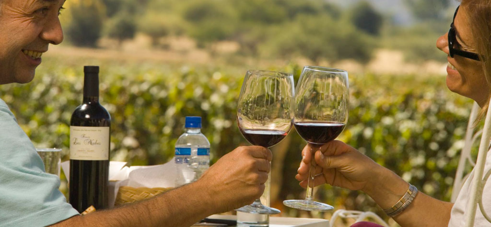

Cafayate se sitúa a unos 1.683 metros sobre el nivel del mar, enclavado en el corazón de los Valles Calchaquíes.
Su ubicación estratégica le otorga un clima semiárido, caracterizado por días soleados y noches frescas. Este entorno geográfico contribuye de manera significativa
a la calidad de los vinos producidos en la región.
El clima de Cafayate se caracteriza por temperaturas cálidas durante el día y noches frescas. En verano, las temperaturas diurnas pueden superar los 30°C,
mientras que las noches suelen ser agradables y frescas. Durante el invierno, las temperaturas diurnas son suaves, pero las noches pueden volverse frías,
llegando a temperaturas cercanas a los 0°C.
La región es conocida por su escasa cantidad de lluvias a lo largo del año, lo que contribuye a la salud de las vides y a la producción de uvas de alta calidad
para la elaboración de vinos.
Este clima seco y soleado, combinado con la altitud, crea condiciones ideales para el cultivo de variedades de uvas como la Torrontés,
emblemática de la zona.
Atractivos Turísticos:
Descubre Cafayate: Tesoro del Vino y Paisajes Impresionantes
Sumérgete en la belleza de Cafayate, una joya enclavada
en los Valles Calchaquíes de Argentina. Conocida por sus viñedos
y vinos blancos excepcionales, destaca la uva Torrontés,
ofreciendo a los visitantes la oportunidad de explorar bodegas
locales mediante fascinantes recorridos de degustación.
Además de su exquisito vino, Cafayate regala vistas panorámicas
espectaculares, con formaciones rocosas imponentes como
Los Castillos y el Anfiteatro. La Plaza Principal y la Iglesia
Catedral añaden un toque encantador a este destino,
convirtiéndolo en un lugar inolvidable donde la cultura y la
naturaleza se entrelazan.

Conclusión:
La región destaca especialmente por su industria vitivinícola, siendo conocida por la producción de vinos de alta calidad,
especialmente el distintivo Torrontés. Los viñedos se mezclan armoniosamente con el paisaje montañoso, creando un escenario pintoresco y sereno.
Los visitantes pueden disfrutar de degustaciones de vino en las bodegas locales, sumergiéndose en la cultura vinícola de la zona.
También se distingue por su arquitectura colonial, representada en la Iglesia Catedral, y su Plaza Principal, que sirve como un punto de
encuentro animado donde convergen la vida local y la actividad turística.
Cafayate ofrece una combinación única de atractivos naturales, culturales y gastronómicos en el corazón de los Valles Calchaquíes. Ya sea explorando formaciones rocosas espectaculares,
disfrutando de la hospitalidad local en la plaza o degustando vinos excepcionales, este destino invita a los visitantes a sumergirse en la riqueza y la tranquilidad de la región